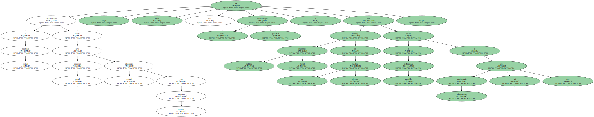
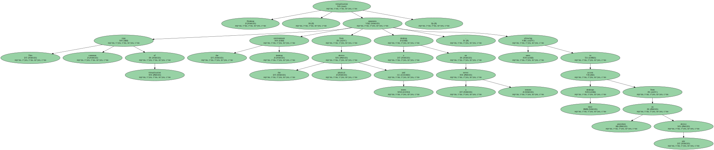

What is a virtual machine.
A Virtual Machine (VM) is a compute resource that uses software instead_of a physical computer to run programs and deploy apps.
One or more virtual “ guest ” machines run on a physical “ host ” machine.
Each virtual machine runs its own operating system and functions separately from the other VMs, even when they are all running on the same host.
This means that, for_example, a virtual MacOS virtual machine can run on a physical PC.
Virtual machine technology is used for many use cases across on-premises and cloud environments.
More recently, public cloud services are using virtual machines to provide virtual application resources to multiple users at once, for even more cost efficient and flexible compute.
What are virtual machines used for.
Virtual machines (VMs) allow a business to run an operating system that behaves like a completely separate computer in an app window on a desktop.
VMs may be deployed to accommodate different levels of processing power needs, to run software that requires a different operating system, or to test applications in a safe, sandboxed environment.
Virtual machines have historically been used for server virtualization, which enables IT teams to consolidate their computing resources and improve efficiency.
Additionally, virtual machines can perform specific tasks considered too risky to carry out in a host environment, such as accessing virus-infected data or testing operating systems.
Since the virtual machine is separated from the rest of the system, the software inside the virtual machine can not tamper with the host computer.
How do virtual machines work.
The virtual machine runs as a process in an application window, similar to any other application, on the operating system of the physical machine.
Key files that make up a virtual machine include a log file, NVRAM setting file, virtual disk file and configuration file.
Advantages of virtual machines Virtual machines are easy to manage and maintain, and they offer several advantages over physical machines: VMs can run multiple operating system environments on a single physical computer, saving physical space, time and management costs.

Virtual machines support legacy applications, reducing the cost of migrating to a new operating system.
For_example, a Linux virtual machine running a distribution of Linux as the guest operating system can exist on a host server that is running a non-Linux operating system, such as Windows.
VMs can also provide integrated disaster recovery and application provisioning options.
Disadvantages of virtual machines While virtual machines have several advantages over physical machines, there are also some potential disadvantages: Running multiple virtual machines on one physical machine can result in unstable performance if infrastructure requirements are not met.
Virtual machines are less efficient and run slower than a full physical computer.
Most enterprises use a combination of physical and virtual infrastructure to balance the corresponding advantages and disadvantages.
The two types of virtual machines Users can choose from two different types of virtual machines — process VMs and system VMs: A process virtual machine allows a single process to run as an application on a host machine, providing a platform-independent programming environment by masking the information of the underlying hardware or operating system.
An example of a process VM is the Java_Virtual_Machine, which enables any operating system to run Java applications as_if they were native to that system.
A system virtual machine is fully virtualized to substitute for a physical machine.
A system platform supports the sharing of a host computer ’ s physical resources between multiple virtual machines, each running its own copy of the operating system.

This virtualization process relies on a hypervisor, which can run on bare hardware, such as VMware_ESXi, or on top of an operating system.
What are 5 types of virtualization.
All the components of a traditional data center or IT infrastructure can be virtualized today, with various specific types of virtualization: Hardware virtualization: When virtualizing hardware, virtual versions of computers and operating systems (VMs) are created and consolidated into a single, primary, physical server.
A hypervisor communicates directly with a physical server ’ s disk space and CPU to manage the VMs.
Hardware virtualization, which is also known as server virtualization, allows hardware resources to be utilized more efficiently and for one machine to simultaneously run different operating systems.
Software virtualization: Software virtualization creates a computer system complete with hardware that allows one or more guest operating systems to run on a physical host machine.
For_example, Android OS can run on a host machine that is natively using a Microsoft_Windows_OS, utilizing the same hardware as the host machine does.
Additionally, applications can be virtualized and delivered from a server to an end user ’ s device, such as a laptop or smartphone.
This allows employees to access centrally hosted applications when working remotely.
Storage virtualization: Storage can be virtualized by consolidating multiple physical storage devices to appear as a single storage device.
Benefits include increased performance and speed, load balancing and reduced costs.
Storage virtualization also helps with disaster recovery planning, as virtual storage data can be duplicated and quickly transferred to another location, reducing downtime.
Network virtualization: Multiple sub-networks can be created on the same physical network by combining equipment into a single, software-based virtual network resource.
Network virtualization also divides available bandwidth into multiple, independent channels, each of which can be assigned to servers and devices in real time.
Advantages include increased reliability, network speed, security and better monitoring of data usage.
Network virtualization can be a good choice for companies with a high volume of users who need access at all times.
Desktop virtualization: This common type of virtualization separates the desktop environment from the physical device and stores a desktop on a remote server, allowing users to access their desktops from anywhere on any device.
In_addition to easy accessibility, benefits of virtual desktops include better data security, cost savings on software licenses and updates, and ease of management.
Container vs virtual machine Like virtual machines, container technology such as Kubernetes is similar in the sense of running isolated applications on a single platform.

While virtual machines virtualize the hardware layer to create a “ computer, ” containers package up just a single app along_with its dependencies.
Virtual machines are often managed by a hypervisor, whereas container systems provide shared operating system services from the underlying host and isolate the applications using virtual-memory hardware.
A key benefit of containers is that they have less overhead compared to virtual machines.
Containers include only the binaries, libraries and other required dependencies, and the application.
Containers that are on the same host share the same operating system kernel, making containers much smaller than virtual machines.
As a result, containers boot faster, maximize server resources, and make delivering applications easier.
Containers have become popluar for use cases such as web applications, DevOps testing, microservices and maximizing the number of apps that can be deployed per server.
Virtual machines are larger and slower to boot than containers.
They are logically isolated from one another, with their own operating system kernel, and offer the benefits of a completely separate operating system.
Virtual machines are best for running multiple applications together, monolithic applications, isolation between apps, and for legacy apps running on older operating systems.
Containers and virtual machines may also be used together.
Setting up a virtual machine Virtual machines can be simple to set up, and there are many guides online that walk users through the process.

VMware offers one such useful virtual machine set-up guide.